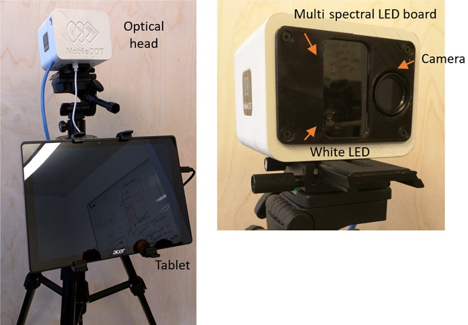
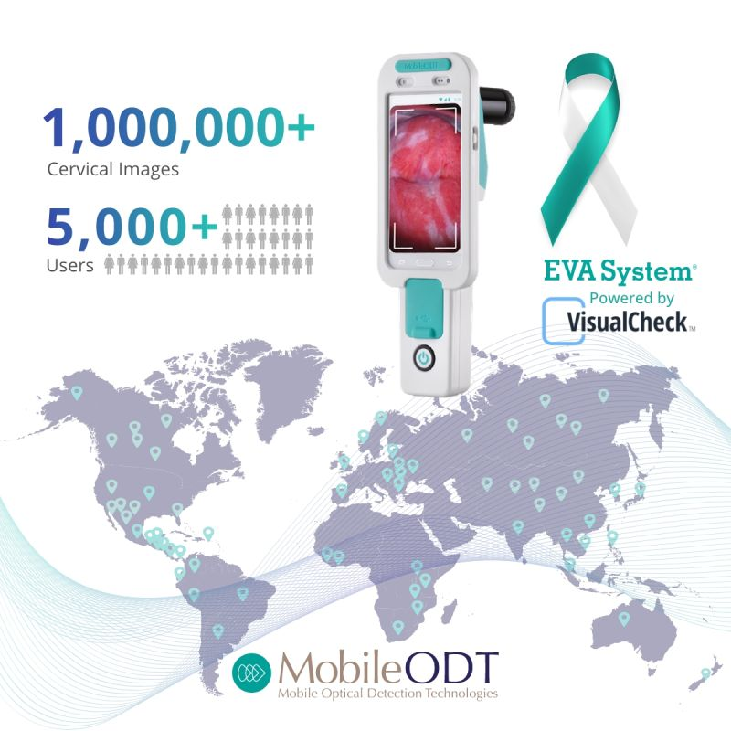
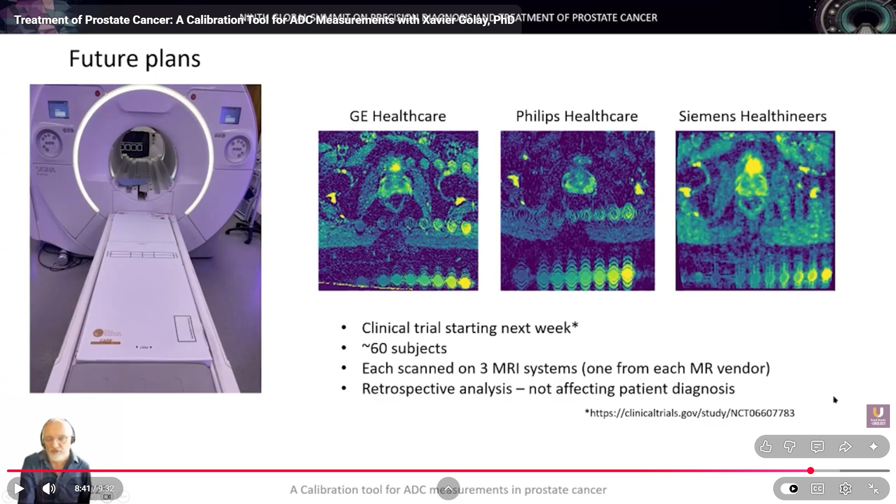
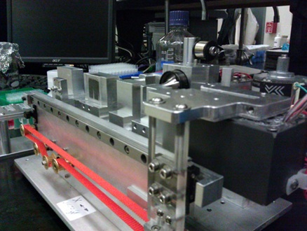
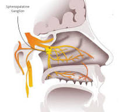
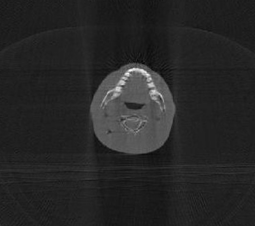

Engineer. Researcher. I translate hard problems into things that work.
I work at the intersection of frontier science and engineering delivery — designing instruments, building systems, and working with the researchers who need them. My background spans production-quality software, data science, through PCB design and embedded firmware — and on to FDA regulatory submissions, clinical trials, and peer-reviewed publication.
I'm not a specialist in the usual sense. I've spent twenty years moving between the physics of a problem, the hardware needed to measure it, the firmware and software to make it useful, and the regulatory and clinical context that determines whether it matters.
That's let me work directly with some extraordinary people — Prof. Xavier Golay from UCL, whose work on quantitative MRI and ADC calibration in prostate cancer underpins the clinical science behind the PREDICT trial; Prof. Steve Jacques from Tufts University, a leading figure in biomedical optics whose published models for optical absorption and scattering in biological tissue were foundational to the multispectral imaging system I built at MobileODT; and Prof. David Kelso from Northwestern on point-of-care diagnostics for low-resource settings.
The common thread across all of it is translation: understanding what a scientist or clinician actually needs to know, and working out what needs to be built to let them know it.
| Period | Where | What |
|---|---|---|
| 2022–present | Gold Standard Phantoms, Sheffield | MRI calibration tooling for clinical trials |
| 2022 | Clexio Biosciences (contract) | CT imaging analysis for drug delivery device design |
| 2015–2022 | Tel Aviv University | PhD Industrial Engineering (part-time, alongside MobileODT) |
| 2015–2020 | MobileODT, Tel Aviv | Multispectral imaging system; FDA-cleared AI colposcope |
| 2012–2015 | Tel Aviv University | PhD Industrial Engineering (full-time, scholarship) |
| 2011–2013 | CIGHT, Northwestern University | Point-of-care diagnostics for global health |
| 2011 | University of Cape Town | MSc Biomedical Engineering (Medical Imaging) |
I'm a senior software engineer at Gold Standard Phantoms, where I am core to the analytical pipeline for the PREDICT clinical trial — a €1.6m Horizon Europe programme working to make prostate cancer MRI a traceable quantitative measurement.

Designed and built three iterations of a portable multispectral imaging system for cervical tissue characterisation — from PCB layout and LED driver circuits through MSP430 firmware to image analysis algorithms incorporating biomedical tissue models. Developed in direct collaboration with Prof. Steve Jacques (OHSU). Published in the Journal of Biomedical Optics (2018).
The hardware became the research platform underpinning the EVA Smart Colposcope — the first FDA-cleared device with integrated AI for cervical cancer detection, now deployed in 29 countries.

Hardware and firmware engineer on the EVA colposcope programme working toward FDA 510(k) clearance. Took over PCB design from an external contractor and drove it to production; designed and developed firmware through to production release; resolved thermal design issues; and worked directly with testing laboratories through ISO electrical and safety certification. Contributed to EMC and thermal testing documentation as part of the broader regulatory submission.
MobileODT was acquired by Liger Medical in 2022 to form an integrated screen-and-treat platform targeting the elimination of cervical cancer in low-resource settings worldwide.

Core developer of the analytical pipeline underpinning the PREDICT clinical trial (NCT06607783) — a €1.6m Horizon Europe EIC Accelerator programme targeting standardised, traceable prostate cancer MRI diagnostics. Built full uncertainty propagation for temperature-dependent phantom materials in close collaboration with Peter Harris at NPL. Also lead developer of spirit-phantom, the open-source Python QA tool used at MRI sites internationally.
→ spirit-phantom on GitHub
→ PREDICT trial registration
→ Prof. Xavier Golay talking about ADC calibration
→ ISMRM 2025: A device and method for in-vivo calibration of ADC measurements in prostate cancer

Early engineering contributor on two Gates Foundation-funded diagnostic programmes: a sample preparation automation system for the LYNX infant HIV p24 antigen test, and a phase-gate cartridge test platform for a point-of-care PCR instrument. Acted as the primary interface between external engineering contractors and the molecular biology team, translating assay requirements into hardware specifications.
The PCR platform programme later became the DASH analyser — which received FDA Emergency Use Authorization and $21.3m in NIH funding for COVID-19 testing.

Analysed CT DICOM imaging data to inform applicator configuration design for a combination drug/device for localised deep nasal delivery. Built an ML model (R²=0.7) to characterise nasal cavity geometry variation across a patient population, with results used directly in device design decisions.

MSc dissertation: Extended prior work on tomographic reconstruction from the Lodox Statscan, a full-body X-ray system used in South African trauma and forensic pathology. The key contribution was automating geometric parameter recovery from image data — designing a calibration phantom and image-processing pipeline to identify marker positions across projection sets, then using non-linear optimisation to recover c-arm angles and scanner geometry for use in filtered back-projection reconstruction.
I'm open to conversations about research engineering roles, instrumentation and diagnostics problems, and consulting on hardware-software-regulatory projects at the frontier of biomedical science.